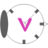
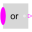
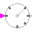
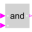
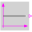
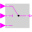
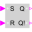

DisjunctiveClockLogical clock ticking whenever any of its input clock signals ticks. |

|
Diagram
{kind=link}
Information
This information is part of the Modelica Standard Library maintained by the Modelica Association.
For a simple example cf. the logical sampling example.Parameters (3)
| useSolver |
Value: false Type: Boolean Description: = true, if solverMethod shall be explicitly defined |
|---|---|
| solverMethod |
Value: "ExplicitEuler" Type: SolverMethod Description: Integration method used for discretized continuous-time partitions |
| nu |
Value: 2 Type: Integer Description: Number of input connections. |
Connectors (2)
| y |
Type: ClockOutput |
|
|---|---|---|
| u |
Type: ClockVectorInput[nu] Description: Vector of Clock input signals. |
Components (9)
|  | combinator |
Type: Or Description: Replaceable logical combinator applied on vector of Clock input signals. Important: Must not be any kind of negation since such would result in infinite many ticks for an infinitesimal short time period. |
|---|---|---|
|  | clock |
Type: EventClock |
| input_ticked |
Type: ClockToBoolean[nu] |
|
|  | forbidden_state |
Type: And[nu] |
|  | S_false |
Type: BooleanConstant[nu] |
|  | suppress_S |
Type: LogicalSwitch[nu] |
|  | input_memory |
Type: RSFlipFlop[nu] |
| reset_ticked |
Type: ClockToBoolean |
|
| splitter |
Type: BooleanReplicator |
Used in Examples (1)
|
Modelica.Clocked.Examples.Elementary.ClockSignals Simple example of conjunctive and disjunctive logical clocks, combining clock signals to derive new event driven clocks. |